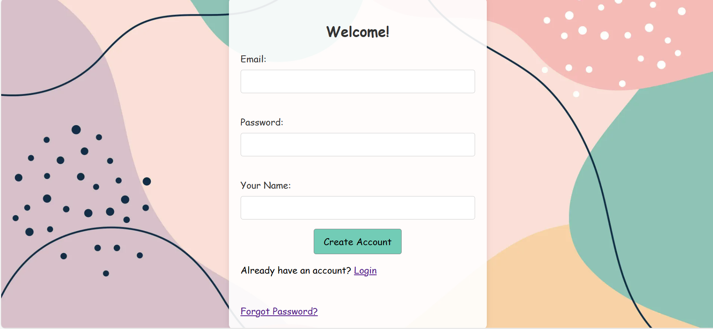
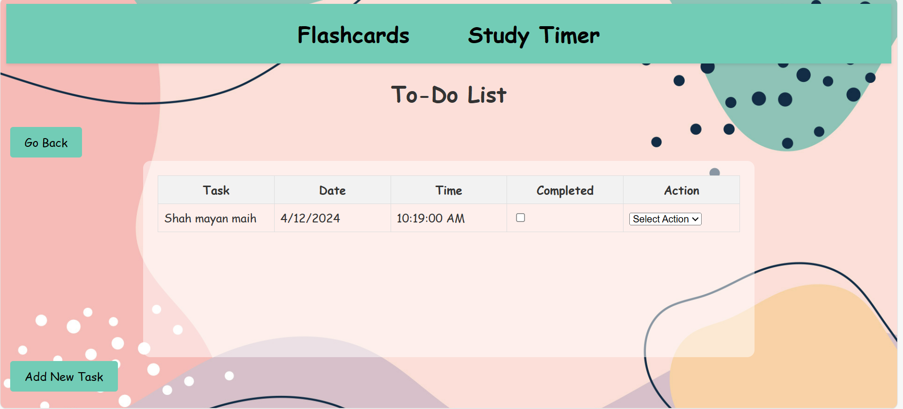

Login
If you already created an account before, type in your email and password to login, you can click on the forgot password link to reset your password.
Don’t have an account? Sign up here.
Sign up
Click on the don’t have an account link and sign up by typing in your email, username, and password.
Landing Page
The landing page has buttons for todo, flashcards, and study timer which you can use to navigate to the respective pages, or click the go back button to go back to the login page.
Study Timer
To start the study timer click the start button, to stop it click the stop button, and click on reset button to reset it.
To Do List
Use the add new task button to add the new task by typing in the task name, selecting date, and time. You can delete or edit a task from the select action dropdown. You can mark a task completed by clicking the checkmark under the checkmark column.
Flashcards
To add a new flashcard, click the add flashcard button, remember you need to type in both question and answer. Click on the edit button and then click on the flash card question or answer to edit them. To edit the answer, you need to click on the question to unhide the answer first, then click on the edit button and by clicking on the answer text you can edit it.